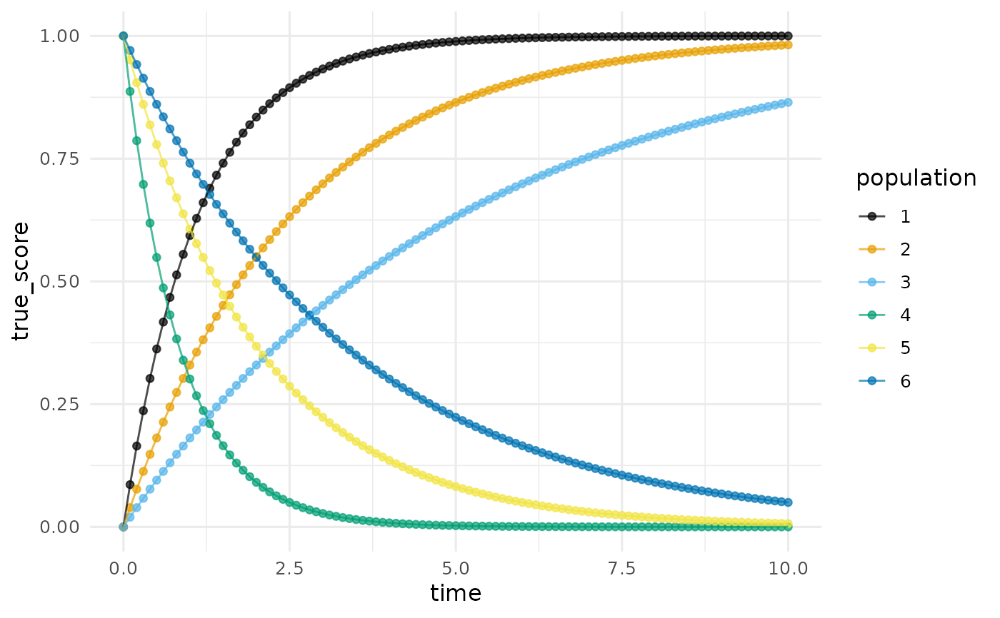
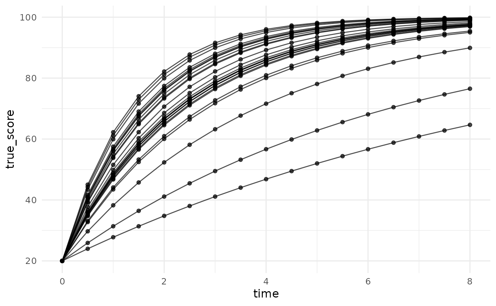
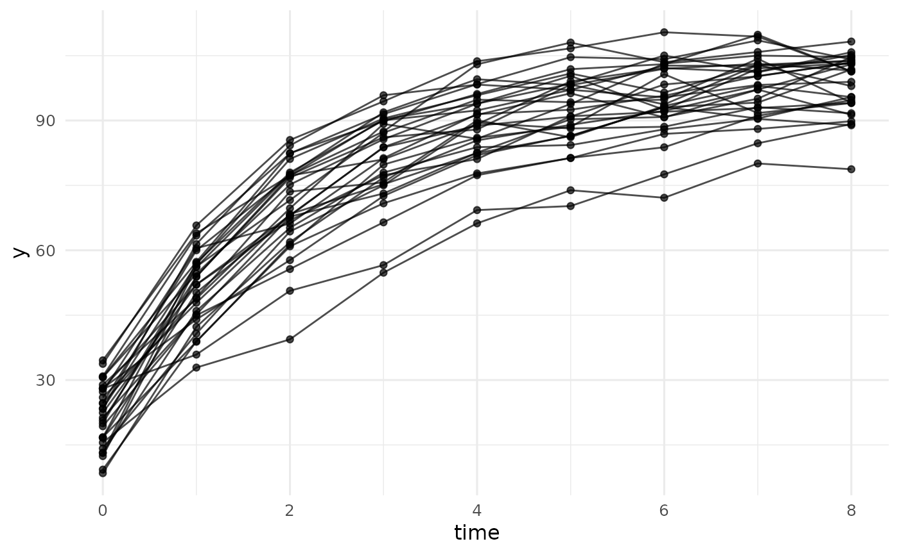

Simulate Data From a Negative Exponential (Asymptotic Regression) Change Model
Source:R/simulate_longitudinal_negative_exponential.R
simulate_longitudinal_negative_exponential.RdGenerates longitudinal data from a random-coefficients negative exponential change model, also called asymptotic regression (Stevens, 1951): each unit (a person, an animal, a tree) approaches an asymptote at a rate set by a curvature parameter, the parameters vary randomly across units, and each measurement adds level-one error. The deterministic part of the curve is $$\mu(t) = \alpha + \zeta \exp(-\gamma t),$$ the parameterization of Kelley (2005, 2008). The negative exponential is the simplest of the package's nonlinear change curves: it has one asymptote and no point of inflection, so it describes change that is fastest at the first assessment and decelerates thereafter.
Usage
simulate_longitudinal_negative_exponential(
n,
target_times = NULL,
fixed_parameters,
time_range = NULL,
occasions = NULL,
time_distribution = "uniform",
random_variances = 0,
random_correlation = NULL,
error_variance = NULL,
reliability = NULL,
error_structure = c("independent", "ar1", "compound_symmetry", "toeplitz"),
error_correlation = NULL,
timing_sd = 0
)Arguments
- n
A single positive integer, the number of units (persons, animals, trees, classrooms) whose trajectories are drawn, or a vector giving the number of units for each population, one entry per parameter vector in
fixed_parameters.- target_times
Numeric vector of the nominal measurement times, one shared schedule for every unit. Give either this or
time_range.- fixed_parameters
The population parameters
c(alpha = , zeta = , gamma = )(an unnamed length-3 vector is taken in that order), or a list of such vectors, one per population (distinct parameter vectors):alphaThe asymptote: the value \(\mu(t)\) approaches as \(t\) grows.
zetaThe negative of the total change: the curve starts at the intercept \(\phi = \alpha + \zeta\) and travels \(-\zeta\) units to the asymptote. Positive
zetagives asymptotic decay towardalphafrom above; negativezetagives asymptotic growth from below.gammaThe curvature (\(\gamma > 0\)): the rate at which the remaining distance to the asymptote closes per unit time. Larger values reach the asymptote sooner.
- time_range
Alternative to
target_times:c(lower, upper)bounds from which each unit draws its own measurement times, so no two units share a schedule (e.g., age in weeks at testing rather than a fixed grade). Requiresoccasions; withtime_range, the level-one error must be a singleerror_variancewith the default independent structure, andtiming_sddoes not apply.- occasions
With
time_range: a single positive integer (every unit measured the same number of times) orc(min, max), from which each unit's number of measurement times is drawn uniformly.- time_distribution
Distribution of the unit-specific times over
time_range; currently"uniform".- random_variances
Between-unit variances of
(alpha, zeta, gamma), a single number recycled to all three or a length-3 vector. Default0(a common curve for everyone). A named vector over any subset of the parameter names (e.g.,c(gamma = 0.02)) varies only those named and leaves the rest fixed.- random_correlation
Optional 3-by-3 correlation matrix among the random parameters; default uncorrelated.
- error_variance, reliability, error_structure, error_correlation, timing_sd
The level-one error and assessment-time machinery, with the same meaning as in
simulate_longitudinal_polynomial: specify exactly one oferror_variance(scalar, per-occasion vector, or full covariance matrix) orreliability(a target average per-occasion reliability, solved by the delta method here);error_structureanderror_correlationset the across-occasion error correlation;timing_sdjitters each unit's actual assessment times around the nominal targets.
Value
A long-format data.frame with columns id,
population, occasion, target_time, time,
true_score, and y, directly usable with
plot_trajectories and nonlinear mixed-model fitters
such as nlme::nlme(). Attributes carry the model, the
fixed_parameters, the between-unit covariance
random_covariance, the level-one error_variance and
error_covariance, and reliability_by_occasion (from
the first-order delta method true-score variance, which can drift
from the realized variance ratio when the random variances are
large relative to the mean curve). The schedule attribute
records "shared" or "unit_specific".
Details
Every parameter answers a substantive question: where does change end
(alpha), where does it start (\(\phi = \alpha + \zeta\)),
and how fast does the gap close (gamma)? That
interpretability is the argument for nonlinear change models over
polynomials, whose coefficients describe no landmark of the process
(Kelley, 2005, 2008); the package vignette on nonlinear growth
develops the comparison.
References
Kelley, K. (2005). Estimating nonlinear change models in heterogeneous populations when class membership is unknown: Defining and developing the latent classification differential change model (Doctoral dissertation). University of Notre Dame.
Kelley, K. (2008). Nonlinear change models in populations with unobserved heterogeneity. Methodology, 4(3), 97–112.
Stevens, W. L. (1951). Asymptotic regression. Biometrics, 7(3), 247–267.
See also
simulate_longitudinal_logistic,
simulate_longitudinal_gompertz,
simulate_longitudinal_richards for the sigmoidal
members of the family; simulate_longitudinal_polynomial
for the polynomial counterpart; plot_trajectories for
plotting the result.
Other data simulators:
simulate_ancova_data(),
simulate_ancova_factorial_data(),
simulate_anova_data(),
simulate_longitudinal_gompertz(),
simulate_longitudinal_logistic(),
simulate_longitudinal_polynomial(),
simulate_longitudinal_richards(),
simulate_regression_data()
Author
Ken Kelley kkelley@nd.edu
Examples
# The six-curve illustration from Kelley (2005): three growth curves
# (intercept 0, asymptote 1) that differ only in curvature, and
# three decay curves (intercept 1, asymptote 0) that mirror them.
# Each curve is its own population of size one, so a single call draws the
# whole panel.
panel <- simulate_longitudinal_negative_exponential(
n = 1, target_times = seq(0, 10, by = 0.1),
fixed_parameters = list(
c(alpha = 1, zeta = -1, gamma = 0.9),
c(alpha = 1, zeta = -1, gamma = 0.4),
c(alpha = 1, zeta = -1, gamma = 0.2),
c(alpha = 0, zeta = 1, gamma = 1.2),
c(alpha = 0, zeta = 1, gamma = 0.5),
c(alpha = 0, zeta = 1, gamma = 0.3)),
error_variance = 0
)
plot_trajectories(panel, id = "id", time = "time",
outcome = "true_score", group = "population")

# Individual differences in a single parameter: only the curvature
# varies (a named entry leaves the other variances at zero), so all
# trajectories share their start and their destination but close the
# gap at their own rates.
set.seed(113)
d_gamma <- simulate_longitudinal_negative_exponential(
n = 25, target_times = seq(0, 8, by = 0.5),
fixed_parameters = c(alpha = 100, zeta = -80, gamma = 0.5),
random_variances = c(gamma = 0.02), error_variance = 0
)
plot_trajectories(d_gamma, id = "id", time = "time",
outcome = "true_score")

# Individual differences in every parameter, plus level-one error:
# vocabulary learning that starts near 20 words (phi = alpha + zeta),
# climbs toward an asymptote near 100, and closes about 40% of the
# remaining gap per month (gamma = 0.5).
set.seed(113)
d <- simulate_longitudinal_negative_exponential(
n = 30, target_times = 0:8,
fixed_parameters = c(alpha = 100, zeta = -80, gamma = 0.5),
random_variances = c(alpha = 25, zeta = 16, gamma = 0.01),
error_variance = 9
)
head(d)
#> id population occasion target_time time true_score y
#> 1 u001 1 1 0 0 14.93417 12.42780
#> 2 u001 1 2 1 1 55.25373 53.94814
#> 3 u001 1 3 2 2 76.61122 76.80784
#> 4 u001 1 4 3 3 87.92441 86.11628
#> 5 u001 1 5 4 4 93.91707 87.91651
#> 6 u001 1 6 5 5 97.09142 98.29619
plot_trajectories(d, id = "id", time = "time", outcome = "y")
